Как мы сделали аналитический инструмент для блога Netpeak
Как узнать, хорошую ли статью вы опубликовали? Ok, допустим, существуют привычные метрики — проведенное на странице время, количество просмотров, количество репостов. Но это все-таки мало что говорит о поведении читателя. Хорошо, возьмем глубину просмотров (количество и качество доскроллов) — казалось бы, такая основательная, окончательная метрика для контентных сайтов.
— Допустим. А для блога?
— Простите, а разве блог не обычное медиа?
— Юридически — да, а на деле не совсем.
К пониманию данного факта мы пришли как раз в процессе создания аналитического инструмента. Задумывали его как инструмент для оценки работы авторов и редакторов блога, а получилась платформа для многоуровневой аналитики контента, позволяющая значительно улучшить ресурс.
Вернемся к началу. Какой контент хорош для новостного сайта? Тот, что человек прочитал внимательно, до конца, а потом еще и расшарил. Казалось бы, какие существуют отличия для блога? А вот такие, что критерием хорошего контента для читателя блога является целевое действие — отправка заявки или заказ товара — сразу после чтения статьи или нескольких статей в блоге.
Простите, но разве это можно узнать?
У нас была база данных блога и ERP/CRM системы агентства, Power BI, Google Analytics, OWOX Pipeline, знание языка R и множество сырых данных в Google BigQuery. Не то чтоб это был необходимый запас для инструмента аналитики контентного проекта, но если уже начинаешь его создавать, бывает трудно остановиться.
Исходные данные
Агентство Netpeak ведет блог с сентября 2008 года. За это время мы получили достаточно материала для анализа:
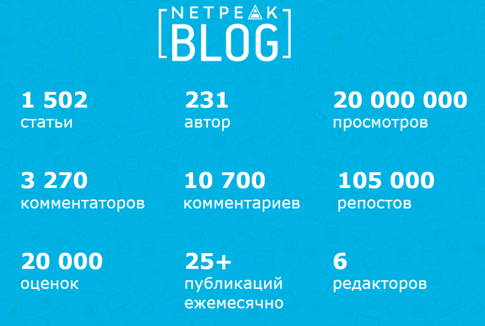

Комментарий редактора: знаете, сколько времени у меня ушло на составление этого списка? Всего 35 секунд, пока обновлялся веб-аналитический инструмент. У меня есть отдельный дашборд со всеми этими показателями, я могу следить за изменением данных в режиме реального времени. И да, передвигая курсор по шкале времени, я могу выбрать нужный период.
На поддержку и ведение блога выделяется достаточно много ресурсов и времени. Ежедневно разными языковыми версиями блога занимаются шесть редакторов, SEO-специалист, веб-аналитик, команда из трёх программистов и проджект-менеджер, который курирует их работу. С помощью веб-аналитического инструмента мы хотели автоматизировать процесс сбора их KPI, а также оценить эффект и пользу, которую приносит блог агентству.
Схема работы BI-решения — веб-аналитического инструмента для блога
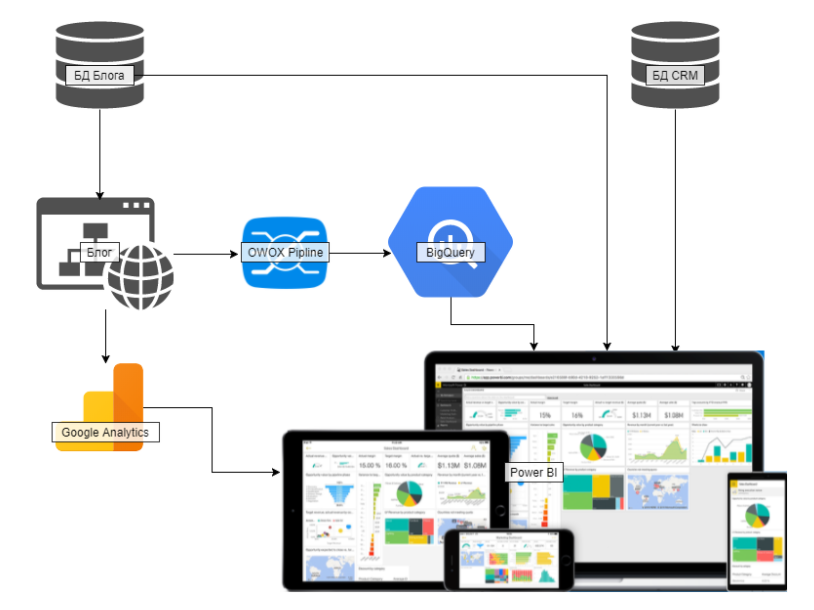
Power BI подключён к четырем источникам данных:
- MySQL база данных блога, в которой хранится вся информация о постах на блоге и статистика по откликам (комментарии, оценки, репосты), BackEnd блога.
- MySQL база данных нашей ERP/CRM системы, в которой хранится информация о всех заявках/оплатах/времени, потраченном на проекты.
- Google BigQuery — сырые данные о посещениях блога. Они собираются с помощью сервиса OWOX Pipeline, так мы определяем заявки, которые были оставлены пользователями сразу после чтения какой-либо из статей на блоге. На основе сырых данных мы рассчитываем такие метрики, как Post Value и Full Read Rate, о которых пойдет речь немного дальше. Также с помощью скриптов R в BigQuery записываются различные рейтинги статей и пользователей.
- Google Analytics — с помощью стандартного коннектора мы тянем общие данные о посещениях блога, количество уникальных посетителей, количество сеансов и поведенческие показатели. По большому счёту эту информацию можно получить и из BigQuery, но для экономии ресурсов (и чтобы не тратить лишние деньги на обработку данных в BigQuery) мы тянем эту статистику из Google Analytics.
Основные метрики веб-аналитического инструмента блога
- Карма — внутренний рейтинг пользователя, в данном случае — автора (редактора). В блоге рассчитывается в зависимости от количества публикаций, комментариев и лайков;
- количество публикаций автора (редактора), опубликованных в блоге;
- среднее количество слов в статьях автора (редактора);
- Post profit — сумма всех оплат по полученным из статей авторов заявкам;
- количество заявок, которое мы получили из статей автора (редактора). В данном случае учитываем не количество нажатий на кнопку «Оставить заявку», а реально полученные заявки в нашей CRM;
- количество клиентов — общее количество клиентов, которые мы получили из заявок, полученных из статей автора (редактора);
- количество оплат — общее количество оплат от клиентов, зашедших из заявок, оставленных после прочтения статьи автора (редактора);
- средняя оценка по постам;
- количество оценок ко всем постам;
- среднее количество оценок одной статьи автора (редактора);
- среднее количество комментариев одной статьи автора (редактора);
- общее количество комментариев ко всем статьям автора (редактора);
- общее количество комментаторов всех статей автора (редактора);
- среднее количество просмотров всех статей автора (редактора);
- Full Read Rate отражает долю полных прочтений текста из общего количества просмотров статей автора (редактора). Если статьи в общем получили 100 просмотров, из которых 25 раз были проскроленны до области с оценками (она находится под статьей), Full Read Rate будет равен 25% (25/100);
- среднее количество репостов статей автора (редактора);
- Post Value распределяет цену полученного со статьи заказа равномерно между всеми прочитанными во время сессии статьями.
Это, пожалуй, одна из самых интересных метрик и именно она позволяет выявить самые продающие тексты на блоге. Post Value распределяет полученный заказ равномерно между всеми прочитанными в рамках сессии статьями.
Комментарий редактора: можно подумать, что здесь все понятно — самыми «продающими» должны оказаться кейсы или статьи об особенностях работы агентства. Ничего подобного. Заказы приходят и из чек-листов, и из хау-ту руководств для новичков, и даже из гостевых статей. Также мне пока что не удалось выявить корреляцию между текстами с наибольшим Post Value и какими-либо привычными метриками качества статьи — заказывают и после чтения статей, далеко не самых популярных в поиске, и совсем не лидеров по доскроллам, репостам, комментариям. Нужна более глубокая работа с аналитикой читательского поведения и дальнейшей типизации «качественных» читателей. А это уже тема для отдельной статьи. Надеюсь, не одной.
Схема расчета Post Value:
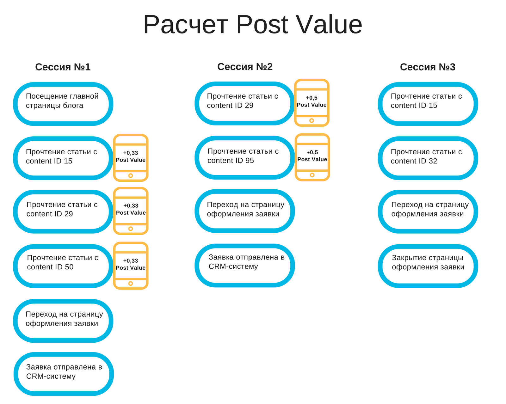
В итоге статья с ID 29 получает суммарно 0,83 балла по Post Value за заказы с первой и второй сессии. Статья с ID 95 получит 0,5 балла, а статьи с ID 15 и 50 — по 0,33 балла Post Value.
В третьей сессии ни одна из статей не получит Post Value, так как процесс оформления заказа не был завершен.
Все эти метрики позволяют формировать контент-план, исходя из ближайших целей. Например, если необходимо поднять поток заявок с блога, можем в первую очередь публиковать авторов со статьями с наибольшим Post Value за последнее время. Нужен быстрый приток трафика — публикуем контент по темам, которые получают больше всего репостов. Хотим повысить вовлеченность аудитории — публикуем статьи на темы, которые комментируют и оценивают чаще всего.
Комментарий редактора: если б все было так просто! На самом деле в среде авторов, как и эстрадных звезд, например, бывают плодовитые и продуктивные таланты, которые пишут много и качественно, а бывают однодневки — создали «шедевр всей жизни» и задрали нос. Встречаются еще и те, о ком Лев Толстой сказал: «Не тот писатель хорош, кто пишет непрестанно, но тот, кто пишет всегда хорошо».
Прелесть инструмента в том, что я как раз могу выделить качественных авторов и авторов с потенциалом. Для меня, пожалуй, инструмент в первую очередь важен тем, что позволяет понять: что и как читают.
Главные отчеты веб-аналитического инструмента блога
Рейтинг авторов помогает формировать контент-план, отдавая предпочтение авторам, чьи статьи получают наибольший отклик по средней оценке, среднему количеству комментариев и оценок, среднему количеству просмотров и шейров, доскроллов, а также суммарному Post Value статей данного автора.
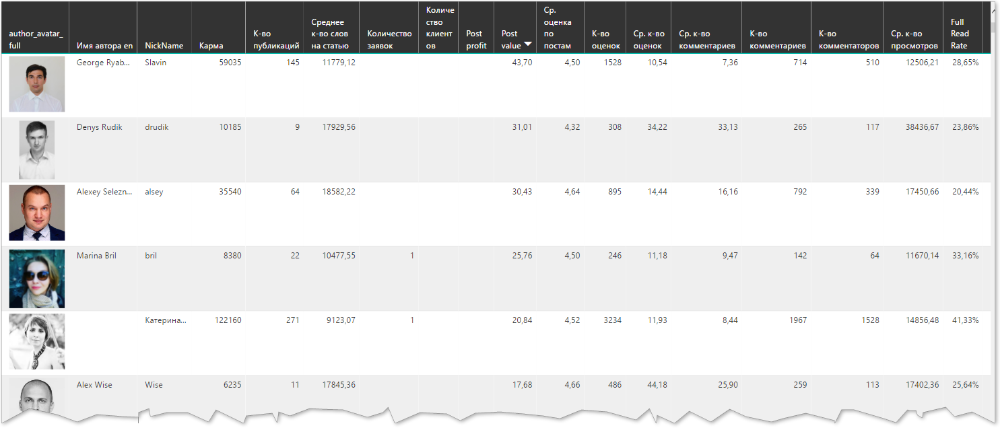
Похоже выглядит и рейтинг редакторов:
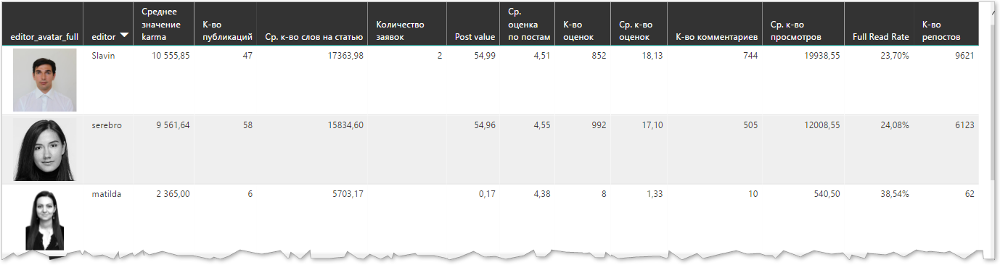
Так как инструмент доступен всем редакторам, появляется игровая составляющая — кто из редакторов принес больше денег агентству за отчетный период, чьи статьи чаще репостили, читали, у кого выше процент доскроллов и так далее.
Комментарий редактора: в Netpeak это все еще и соотносится с метриками мотивации, то есть непосредственно влияет на зарплату. К слову, на этом скриншоте не отображается важная, на мой взгляд, метрика — процент шлаковых заявок за отчетный период. То есть человек-то мог заявку заполнить, но до оплаты дело не дошло. И, на мой взгляд, первая задача редактора — продумывать и работать над такими путями читательского поведения, которые будут приводить к оплатам. То есть с каждым месяцем уменьшать процент шлаковых заявок.
Рейтинг статей также содержит все доступные метрики и позволяет отфильтровать более 1500 материалов по доскроллам, комментариям, комментаторам, Post Value, оценкам, репостам. Конечно, доступны дополнительные фильтры по языковой версии блога (у блога Netpeak есть пять независимых языковых версий).
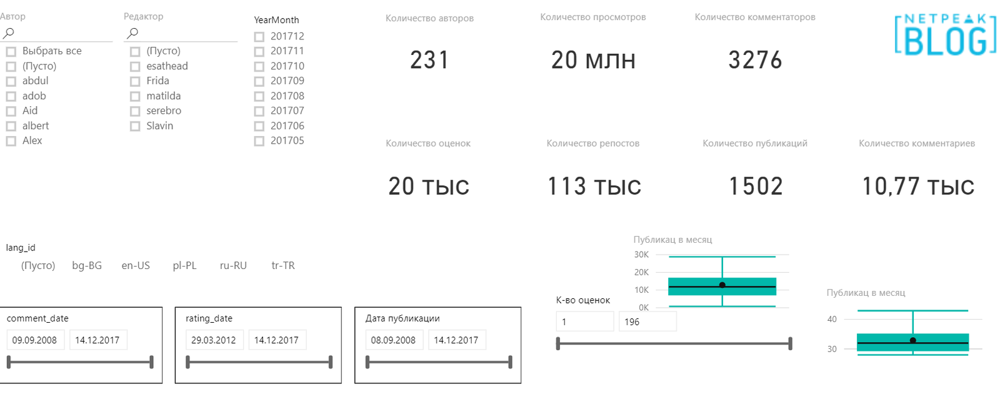
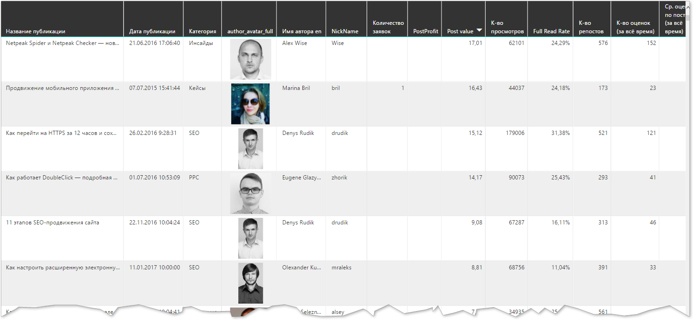
Конечно, есть отдельный «отчет с отчетами», где все метрики отображаются в динамике:
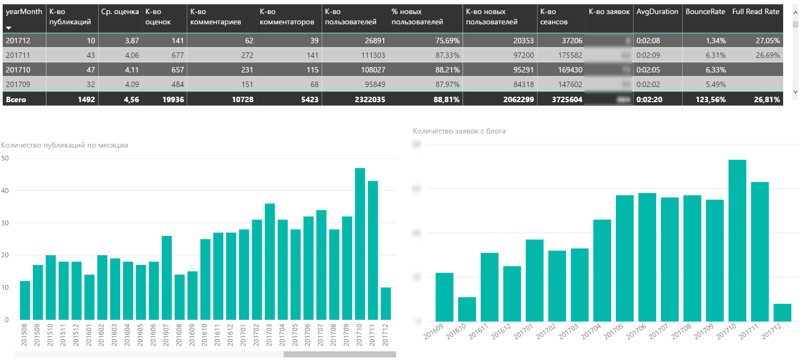
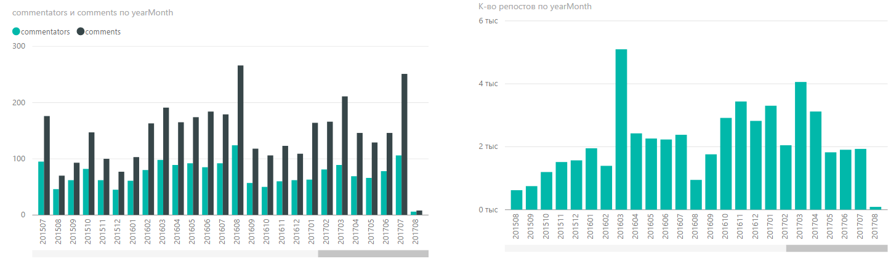
Существует также отдельный рейтинг рубрик:
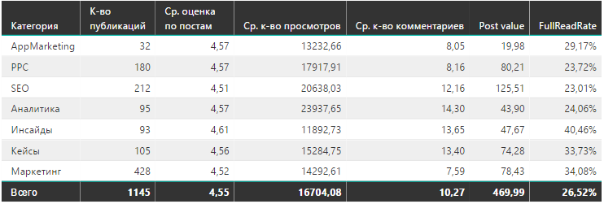
Вот, например, «ящик с усами», показывающий распределение количества репостов за октябрь по опубликованным в октябре же материалам в рубриках блога:
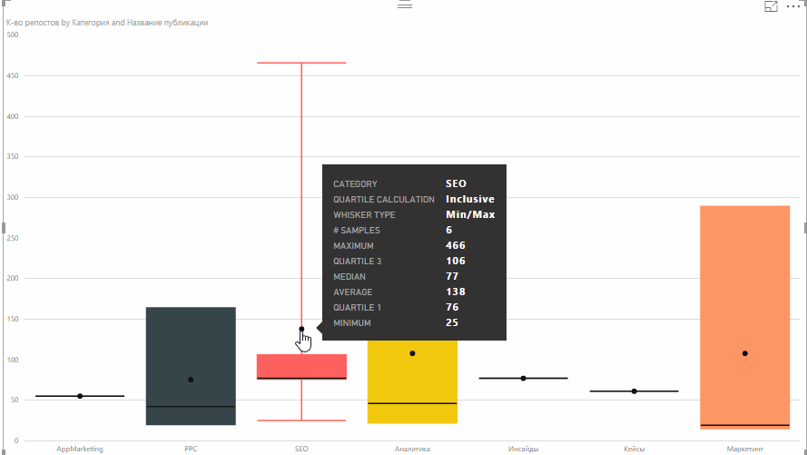
Еще один интересный график — корреляция между процентом доскроллов и количеством слов в статье. При наведении видим данные статьи:
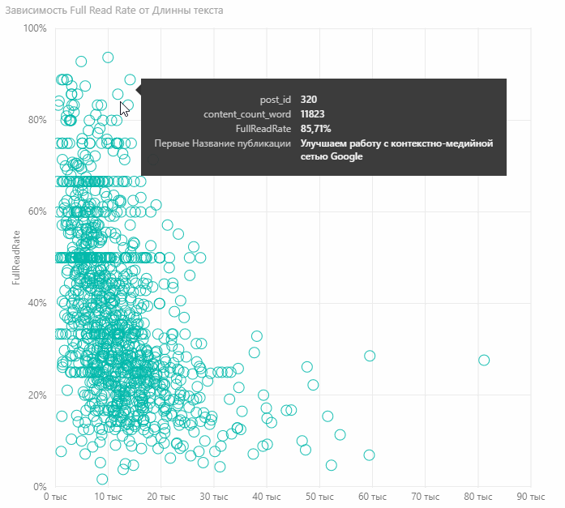
Наконец, на отдельный лист BI вынесены динамические рейтинги топ-25, по Post Value, просмотрам, репостам, комментариям, доскроллам, оценкам:
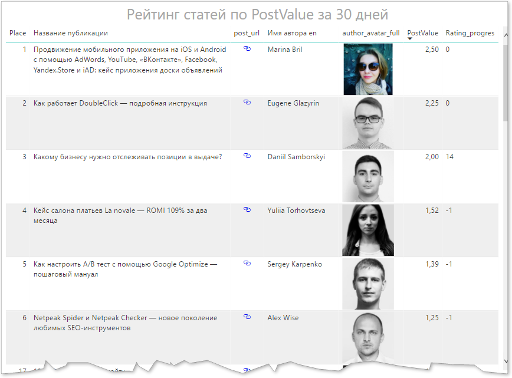
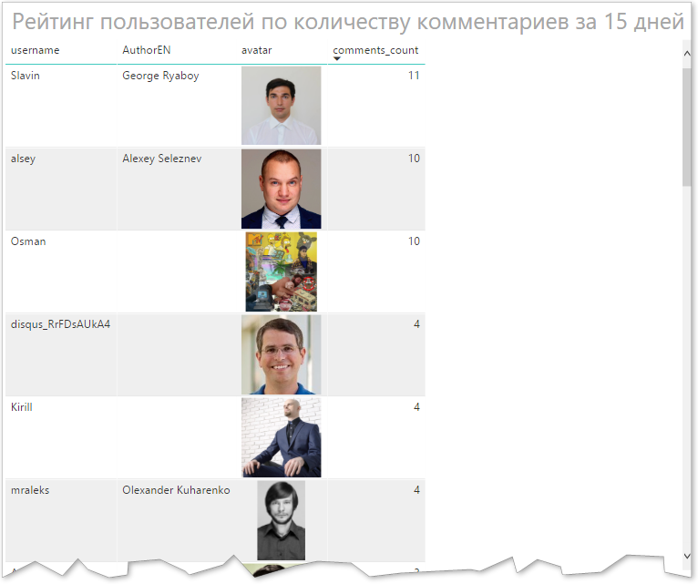
Колонка Rating_progress показывает изменение позиции контента (автора, редактора) относительно вчерашнего рейтинга:
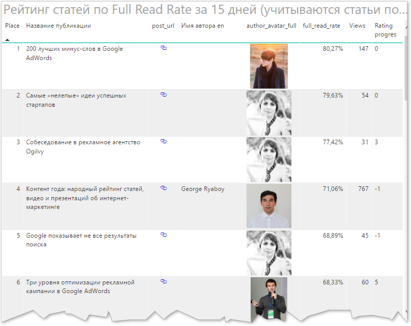
Все эти отчеты ежедневно высылаются на почту редактора — и он начинает рабочий день с анализа изменений позиций контента и авторов. В результате делает выводы об изменении читательских настроений/трендов: что сейчас читают, репостят, какие статьи приносят заявки и так далее.
Комментарий редактора: чистая правда. Это бесценно, бесценно.
Что мы знаем о заявках из блога
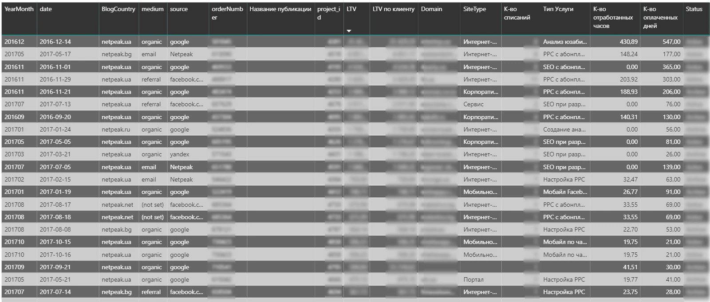
Подробный отчет по всем заявкам, которые мы получили из статей в блоге, включает в себя следующий набор метрик:
- языковая версия блога, из которой была получена заявка;
- источник и канал трафика, из которого пользователь зашел на блог, перед тем как оставил заявку;
- номер заявки;
- название статьи, если заявка была оставлена по нажатию кнопки «Оставить заявку» именно из какой-то статьи;
- LTV — общая сумма всех оплат по заявке;
- домен клиента, зашедшего по заявке;
- тип сайта клиента — интернет-магазин, сервис, портал или корпоративный сайт;
- количество оплат, полученных от клиента по заявке;
- услуга, которую мы оказываем клиенту сейчас (заметьте, это может быть не та услуга, по которой он подал заявку);
- количество отработанных часов по проекту, полученному из заявки;
- количество оплаченных клиентом рабочих дней;
- список услуг, которыми интересовался клиент на момент отправки заявки;
- статус проекта (активен или сдан в архив).
Мы можем оценить все источники и каналы трафика, приводящие на блог будущих клиентов, какие статьи становятся «ключевыми» перед оплатой, какие именно клиенты приходят из блога (малый, средний или крупный бизнес) и многое, многое другое.
Все эти метрики дают нам полное понимание того, сколько денег мы получили за определённый период, привлекая новых клиентов с помощью опубликованных в блоге статей.
Как мы используем аналитический инструмент для блога
- Внедрили систему динамических рейтингов, благодаря которой видим читательские настроения и тренды. Используя это, удобнее формировать подборки для email-рассылок.
- На основании рейтинга статей по Post Value внедрили систему рекомендаций статей для прочтения (по рубрикам).
- Пересмотрели, оптимизировали и автоматизировали систему расчёта KPI редакторов блога.
- Начали считать прямой эффект от ведения блога в деньгах. То есть, связав сырые данные о посещаемости блога с данными из нашей внутренней ERP/CRM системы, мы знаем, какие заявки пришли к нам из статей в блоге, какой жизненный цикл этих проектов, сколько мы с этих заявок получили денег, сколько отработали часов, сколько получаем денег с одного часа работ, сколько отработали дней и многое другое.
- Вынесу отдельным пунктом — поняли, какой процент заявок из блога конвертируется в клиентов.
- Поняли, какие каналы для шеринга постов являются наиболее продуктивными для получения лидов из контента блога, вплоть до отдельных рефералов.
- Получили возможность выводить рейтинг авторов, статей и категорий по оценкам, комментариям, комментаторам, репостам, доскроллам, Post Value. То есть понимаем, кому лучше отдавать задачи на создание текстов.
- Получили инструмент для отслеживания читательского поведения и отображения его в режиме реального времени.
Если у вас остались вопросы, пишите, обсудим в комментариях.